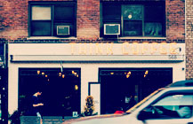

秋になりやすいギックリ腰の原因と対策
 夏が終わり涼しくなる時期というのはぎっくり腰が多くなります。
夏が終わり涼しくなる時期というのはぎっくり腰が多くなります。
ぎっくり腰は季節の変わり目に多いのですが、秋が一番多いと言われています。その原因となっているのが「腎臓」です。
理由は、気温が下がる時期は水分の調整がうまくできないからです。
夏場は汗をかくことで水分を外に出しますが、秋になり涼しくなると体内に水分がこもります。汗をかいていたことで外に水分を出していたのが、今度は尿として水分を外に出さないといけなくなります。
9/29からのマスク着用について

3/13からマスクが任意になりました。平谷鍼灸院では、マスクの着用は自由化となります。
外すのには抵抗がある方や持病などで気になる方は、着用していただいて大丈夫です。外して施術を受けたい方ももちろん大丈夫です。どうぞよろしくお願い致します。
夏休みのお知らせ
夏休みのお知らせ
毎度お世話になっております。誠に勝手ながら8/10から8/15の6日間お休みをいただきます。
ホームページを変更しました！
ホームページのリニューアルを完成しました。
見やすいホームページになりましたのでよろしくお願いいたします。